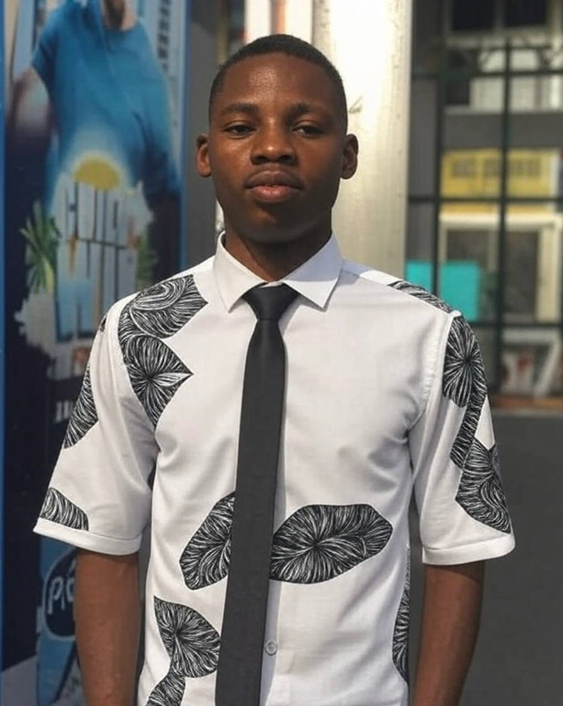

SUMMARY
"Entry-level web developer seeking a role to apply my skills in
HTML, CSS, Python and Javascript to create user-friendly
websites and growth within dynamic tech team."
EDUCATION
- Febtolad Private School - 2010
- GlassHouse College -2016
- University of Lagos - 2026
WORK EXPERIENCE
Junior Web Developer
SARE Global
*February 2025 - Currently*
- - Designed a fully functional event registration site using React and Firebase, handling 50+ mock user sign-ups during testing
- - Collaborated with UX designers to implement responsive designs, ensuring seamless functionality across desktop and mobile platforms
- - Worked with back-end team to connect PostgreSQL databases, enhancing data retrieval efficiency for dynamic content
Web Developement Intern
Devkrea8 Tech Limited
*April 2025 - September 2025*
- - Assisted in building and updating 3 company websites using HTML, CSS, and JavaScript, ensuring cross-browser compatibility.
- - Supported senior developers in debugging front-end code, reducing UI errors by 20% during testing phases.
- - Presented project to a group of 10 classmates, improving technical communication skills
SKILLS
- Proficient in HTML, CSS, and JavaScript for front-end development
- Basic knowledge of React and Bootstrap for building responsive interfaces
- Experience with Git for version control and collaborative coding
- Understanding of responsive design and cross-browser compatibility
- Strong problem-solving and teamwork skills from group projects
HOBBIES
Drawing
Playing video games
Listening to music
CONTACT ME
MY PORTFOLIO